Proyecto Café
Clasificación de alteraciones visibles en hojas de café
Evaluamos si el color y la textura permiten distinguir hojas sanas y afectadas en fotografías de RoCoLe.
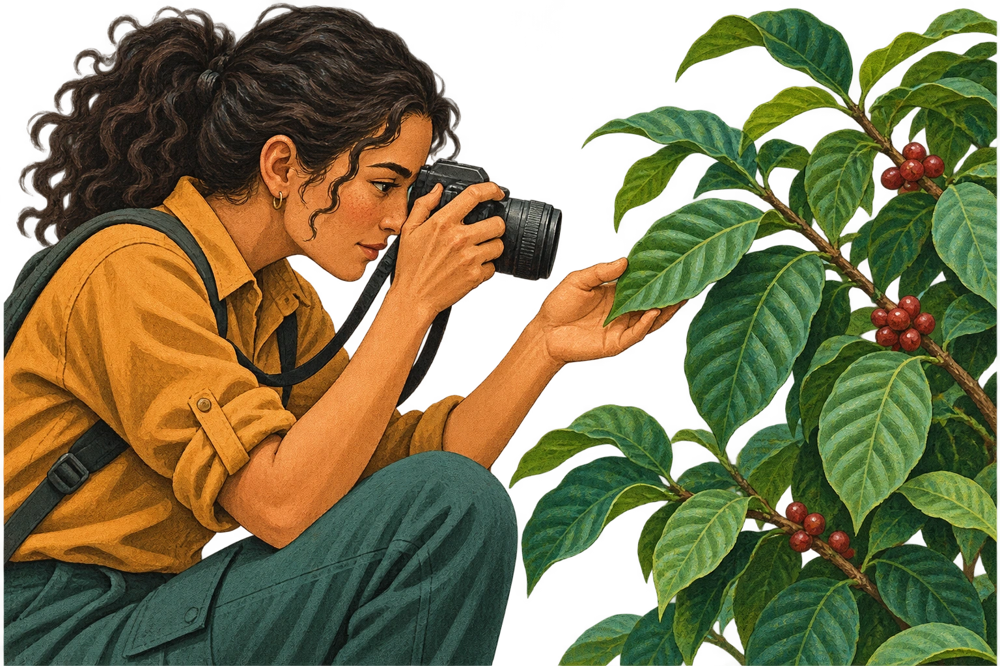
Gio, Víctor, Camilo y Dora
Evaluamos si el color y la textura permiten distinguir hojas sanas y afectadas en fotografías de RoCoLe.

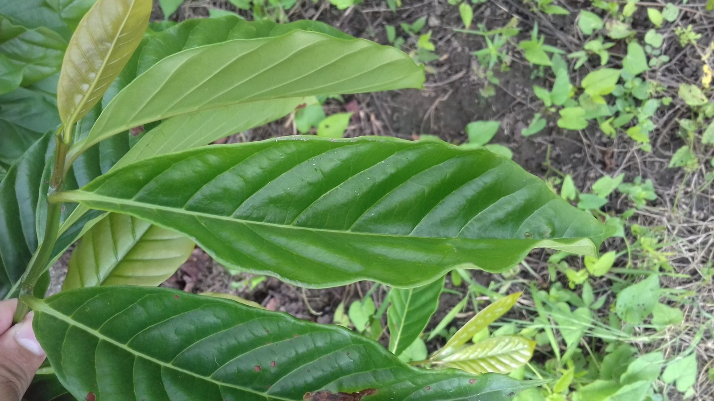
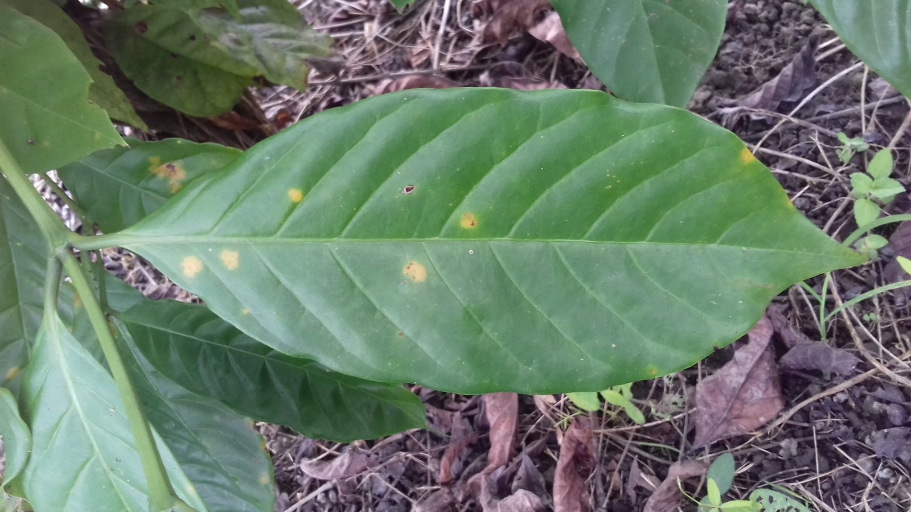
Las dos clases están casi equilibradas.
La clase afectada reúne casos de ácaro rojo y cuatro niveles de roya.
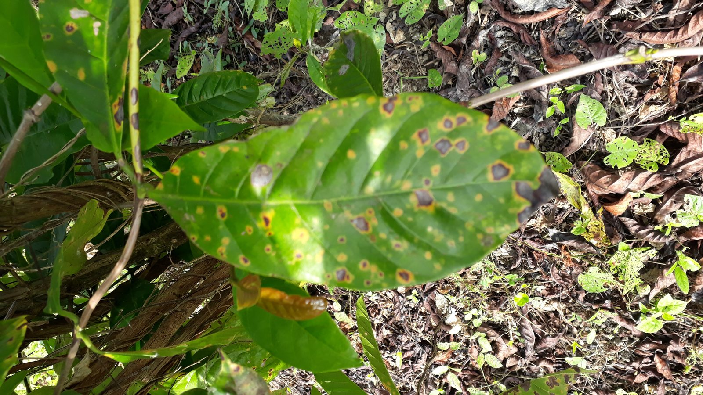

Dos archivos del inventario original contienen la misma fotografía.
En 55 pares
Conservamos una copia. En 15 de esos pares revisamos primero la severidad de la roya.
En 12 pares
Apartamos ambas copias porque las etiquetas discrepaban sobre el tipo de alteración o el estado de la hoja.
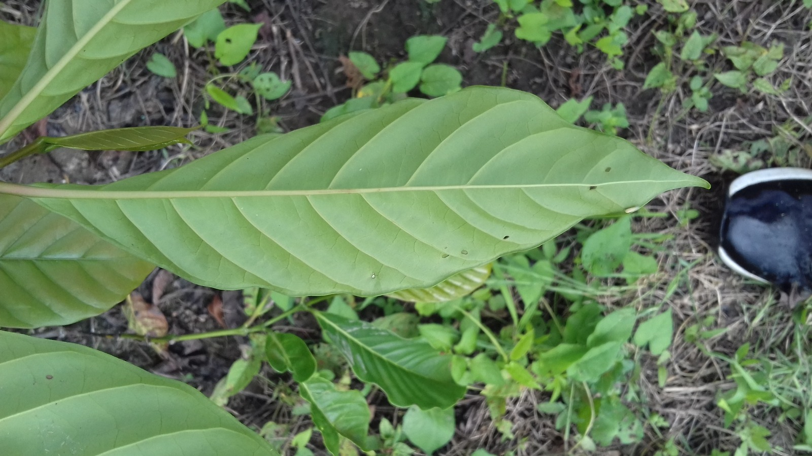
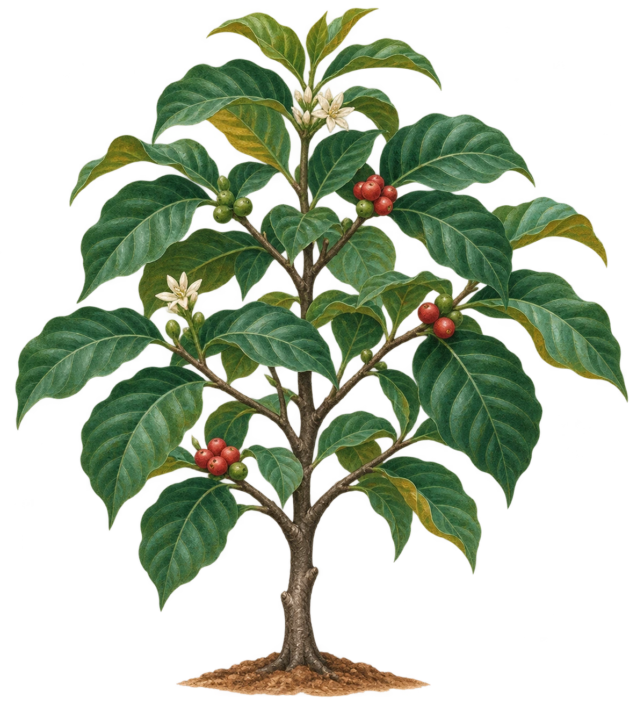
Planta C1P1
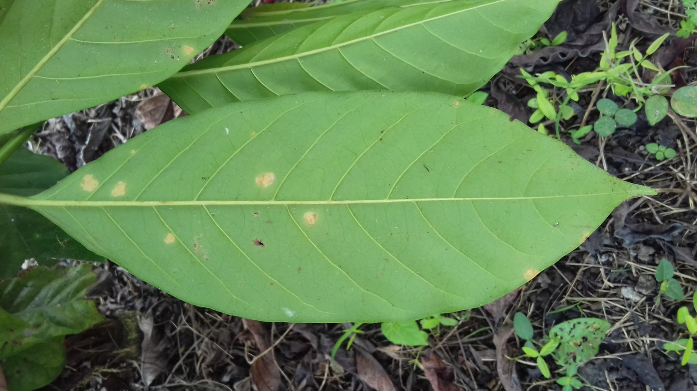
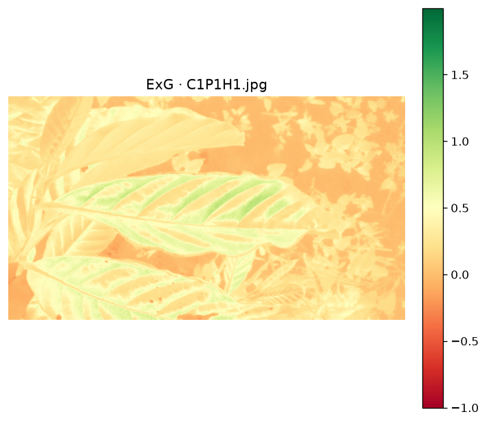
El índice de verde también responde a las hojas del fondo.
Resumimos el color con ExG y NGRDI. Para la textura medimos el contraste, la homogeneidad y la energía de los tonos de gris vecinos.
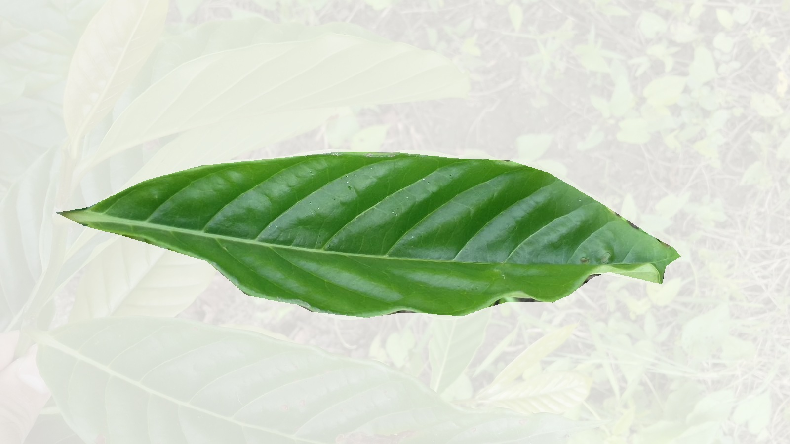
Al delimitar la hoja, cambió la medida del verde.
Media del índice ExG en C1P1H1.
En esta hoja, el 94,4 % de los píxeles cae en el tercer intervalo de matiz.
0,74
F1 macro de Random Forest con máscara e histogramas de color.
El clasificador de mayoría obtuvo 0,34.
En cada vuelta, el pliegue terracota quedó reservado para la evaluación.
Cinco pliegues para evaluar.
Dentro del entrenamiento, tres pliegues sirvieron para escoger los hiperparámetros. Cada grupo se evaluó una sola vez.
0,796
Media en los cinco pliegues externos.
El intervalo aproximado del 95 % para Random Forest fue de 0,778 a 0,814.
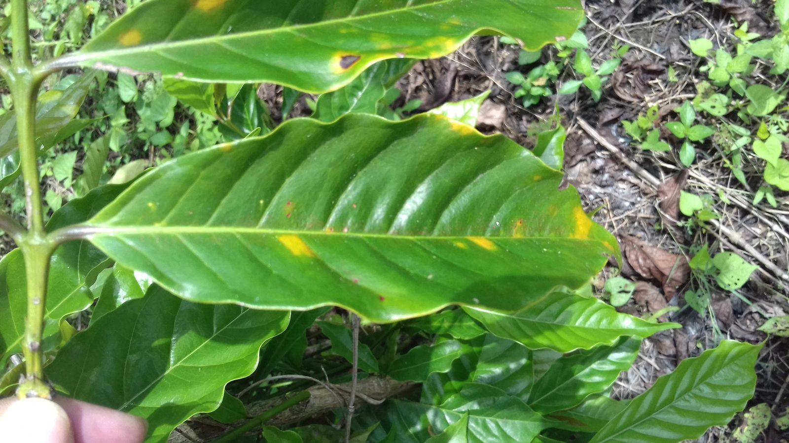
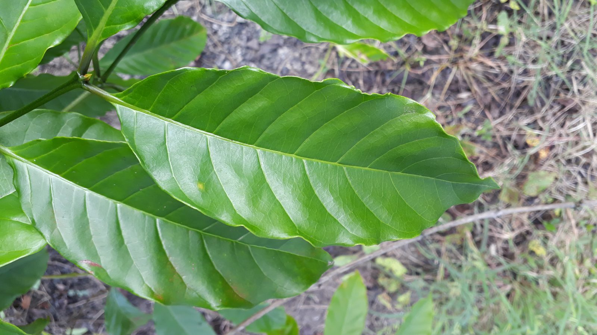
Las dos fotografías tenían la misma etiqueta de referencia, roya nivel 1.
En RoCoLe, Random Forest alcanzó un F1 macro medio de 0,796 con medidas de color y textura de la hoja delimitada.
Para evaluar su uso en campo, primero habría que obtener la máscara de cada hoja nueva y probar el modelo con plantas externas.
Logística · C = 0,001 / 0,01 / 0,1 / 1 / 10 / 100
SVM · C = 0,1 / 1 / 10 · núcleos lineal o RBF
Random Forest · 100 / 200 / 400 árboles · profundidad 5 / 10 / 20 o sin límite
La mejor configuración se elige en cada pliegue externo por el promedio interno de F1 macro.
Filas = referencia · columnas = predicción
Exactitud (605+574)/1.481 = 79,6 % · Sensibilidad afectada 574/723 = 79,4 %
Cobertura mediana de hoja en el inventario: 24,9 % (cuartiles 18,9 % y 31,8 %)
Distinta del 19 % de la fotografía de ejemplo C1P1H1
Brillo dentro de la máscara: mediana 133 (cuartiles 117 y 151)